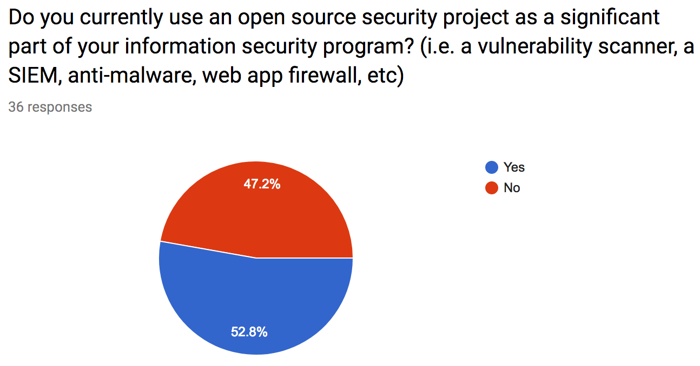
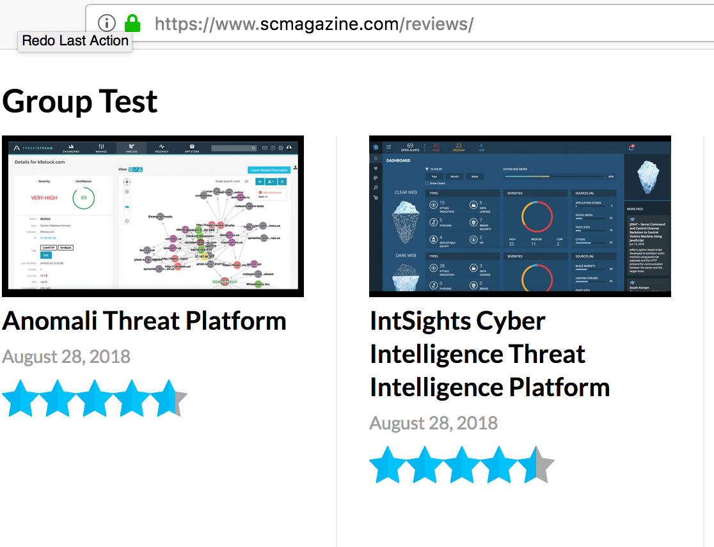

Open Source Security Solutions:
solve
your problem!
bsides PDX 2018
Jeff Bryner
Director: Enterprise Information Security
Agenda
- Problems
- Open Source?
- OSS Wins!
- Problems
- Solution?
- 5 projects...
- How can you help?
Nope
not about browsers
Budgets: Poll üôãüèΩ
- 0 dollars ü§î
- enough dollars üòå
- too many dollars üòú
ü§ï No brainers?
Commercial space
- database security
- email security (DKIM, etc.. uggh)
- AV?
üìùCurrent Landscape?
When in doubt, ask!
☑︎ Survey says
Open source is in play

⌘ Used && Useful:
Tools that are in play include:
- (IDS) Bro/Zeek/Snort/Suricata
- (Logs) ELK, Gray Log, fluentd
- (Endpoint) OS Query, GRR
- (Scanners) nmap, nikto, zap
☠ Barriers
☠ Barriers
Catalog
What's out there?
Lists
We make lists:
- n0where.net / cyberpunk ( Penetration Testing and Security Auditing Tools)
- https://github.com/meirwah/awesome-incident-response
- https://github.com/jivoi/awesome-ml-for-cybersecurity
- https://github.com/0x4D31/awesome-threat-detection
- https://github.com/Cugu/awesome-forensics
- https://github.com/sbilly/awesome-security
- https://github.com/sindresorhus/awesome
- https://github.com/jnv/lists
Meanwhile
Commercial tools have buyer's guides

Framework
How to shop?
WIP
There is will be an app!
Pivot!
Select your criteria
Pivot!
Potential solutions
üíâHealthy?
Hard to gauge health
üíâHealthy?
üíâHealthy?
Feature complete? Abandoned? Health?
Data!
Use data to gauge health
Health
Health Pivot
Lists
5 things you can do with open source!
(that maybe you didn't know..and now you do!)
Map yer cloud
https://github.com/duo-labs/cloudmapper
JA3
SSL fingerprinting
SSLVersion, Cipher, SSLExtension, EllipticCurve, EllipticCurvePointFormat
Pwnage?
Easily check data exposure: https://github.com/brycx/checkpwn
Binary Alert
Easy s3/yara https://github.com/airbnb/binaryalert
(relatively easy)
Falco
sysdig's falco
bonus!
gltail
https://github.com/Fudge/gltail
Help!
How you can help:
- Help code inventory/catalog
- Help crowdsource inventory tools (tags), etc
- Help yer favorite OSS project!
Thanks!
Jeff Bryner
@0x7eff
jbryner@mozilla.com